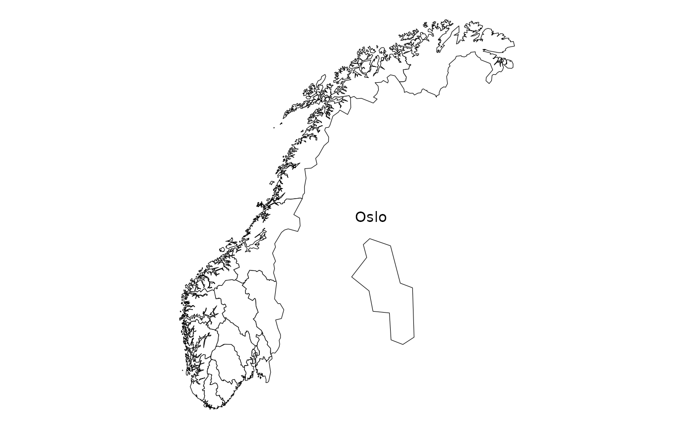

Maps of Norwegian counties with an insert for Oslo in data.table format
Source:R/data_norway_county.R
nor_county_map_bxxxx_insert_oslo_dt.RdWe conveniently package map datasets for Norwegian counties (taken from Geonorge) that can be used in ggplot2 without needing any geo libraries. This data is licensed under Creative Commons BY 4.0 (CC BY 4.0).
Usage
nor_county_map_b2020_insert_oslo_dt
nor_county_map_b2019_insert_oslo_dt
nor_county_map_b2017_insert_oslo_dt
nor_county_position_geolabels_b2020_insert_oslo_dt
nor_county_position_geolabels_b2019_insert_oslo_dt
nor_county_position_geolabels_b2017_insert_oslo_dtFormat
- long
Location code.
- lat
Location name.
- order
The order that this line should be plotted in.
- group
Needs to be used as 'group' aesthetic in ggplot2.
- location_code
Location code (county code).
An object of class data.table (inherits from data.frame) with 4736 rows and 5 columns.
An object of class data.table (inherits from data.frame) with 4545 rows and 5 columns.
An object of class data.table (inherits from data.frame) with 11 rows and 3 columns.
An object of class data.table (inherits from data.frame) with 18 rows and 3 columns.
An object of class data.table (inherits from data.frame) with 19 rows and 3 columns.
Examples
# 2020 borders
library(ggplot2)
q <- ggplot(mapping = aes(x = long, y = lat))
q <- q + geom_polygon(
data = csmaps::nor_county_map_b2020_insert_oslo_dt,
mapping = aes(group = group),
color = "black",
fill = "white",
size = 0.2
)
q <- q + annotate(
"text",
x = csmaps::nor_xxx_position_title_insert_oslo_b2020_insert_oslo_dt$long,
y = csmaps::nor_xxx_position_title_insert_oslo_b2020_insert_oslo_dt$lat,
label = "Oslo"
)
q <- q + theme_void()
q <- q + coord_quickmap()
q
# 2019 borders
library(ggplot2)
q <- ggplot(mapping = aes(x = long, y = lat))
q <- q + geom_polygon(
data = csmaps::nor_county_map_b2019_insert_oslo_dt,
mapping = aes(group = group),
color = "black",
fill = "white",
size = 0.2
)
q <- q + annotate(
"text",
x = csmaps::nor_xxx_position_title_insert_oslo_b2019_insert_oslo_dt$long,
y = csmaps::nor_xxx_position_title_insert_oslo_b2019_insert_oslo_dt$lat,
label = "Oslo"
)
q <- q + theme_void()
q <- q + coord_quickmap()
q

# 2017 borders
library(ggplot2)
q <- ggplot(mapping = aes(x = long, y = lat))
q <- q + geom_polygon(
data = csmaps::nor_county_map_b2017_insert_oslo_dt,
mapping = aes(group = group),
color = "black",
fill = "white",
size = 0.2
)
q <- q + annotate(
"text",
x = csmaps::nor_xxx_position_title_insert_oslo_b2017_insert_oslo_dt$long,
y = csmaps::nor_xxx_position_title_insert_oslo_b2017_insert_oslo_dt$lat,
label = "Oslo"
)
q <- q + theme_void()
q <- q + coord_quickmap()
q